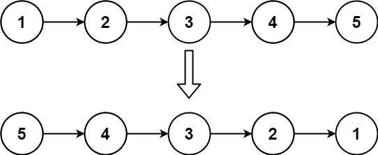
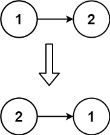

206. 反转链表
本题学习状态正在读取学习记录…下次复习：—
按 M 快速切换薄弱标记题目与约束
给你单链表的头节点 head ，请你反转链表，并返回反转后的链表。
示例 1：

输入：head = [1,2,3,4,5] 输出：[5,4,3,2,1]
示例 2：

输入：head = [1,2] 输出：[2,1]
示例 3：
输入：head = [] 输出：[]
提示：
链表中节点的数目范围是 [0, 5000]
-5000 <= Node.val <= 5000
进阶：链表可以选用迭代或递归方式完成反转。你能否用两种方法解决这道题？
核心不变量
修改 next 前必须先保存原来的后继。
完整推导
思路推导
-
直觉与痛点（单向的无奈）：
单链表只有
next指针，只能往后走，不能往回走。我们想让1 -> 2变成1 <- 2，也就是要修改2的next指针，让它指向1。痛点：如果你直接写
2.next = 1，那么2原本指向3的指针就断了！你再也找不到3了。 -
破局思路（双指针 + 临时备忘录）：
我们需要两个核心指针在前面探路：
prev（前驱节点）：记录当前节点要指向的新主人。刚开始我们在车头，前面没有节点，所以初始值为null。curr（当前节点）：记录我们正准备反转的节点。初始值为head。- 灵魂辅助
next（临时节点）：在每次准备修改curr.next之前，先偷偷把curr.next存到next里，作为“备忘录”。这样就算链表断开了，我们照样能找到下一步该去哪。
-
逻辑推演（微操四步曲）：
以
1 -> 2 -> 3 -> null为例：- 准备：
prev = null,curr = 1。 - 第一轮反转：
1. 记下后路：
next = curr.next(也就是记下 2)。 2. 斩断旧缘，指向新欢：curr.next = prev(让 1 指向 null)。 3.prev前进：prev = curr(prev 移到 1)。 4.curr前进：curr = next(curr 移到 2)。 - 第二轮反转：此时
prev=1,curr=2。重复上面四步，2 的 next 会指向 1。 - 结束条件：当
curr走到null时结束。此时的prev刚好停留在原来的尾节点（也就是新的头节点）上！
Java 实现（迭代法）
C++ 实现
实现来源：代码随想录（programmercarl.com）
class Solution { public: ListNode* reverseList(ListNode* head) { ListNode* temp; // 保存cur的下一个节点 ListNode* cur = head; ListNode* pre = NULL; while(cur) { temp = cur->next; // 保存一下 cur的下一个节点，因为接下来要改变cur->next cur->next = pre; // 翻转操作 // 更新pre 和 cur指针 pre = cur; cur = temp; } return pre; } };Python 实现
实现来源：代码随想录（programmercarl.com）
# Definition for singly-linked list. # class ListNode: # def __init__(self, val=0, next=None): # self.val = val # self.next = next class Solution: def reverseList(self, head: ListNode) -> ListNode: cur = head pre = None while cur: temp = cur.next # 保存一下 cur的下一个节点，因为接下来要改变cur->next cur.next = pre #反转 #更新pre、cur指针 pre = cur cur = temp return preGo 实现
实现来源：代码随想录（programmercarl.com）
//双指针 func reverseList(head *ListNode) *ListNode { var pre *ListNode cur := head for cur != nil { next := cur.Next cur.Next = pre pre = cur cur = next } return pre }C 实现
实现来源：代码随想录（programmercarl.com）
struct ListNode* reverseList(struct ListNode* head){ //保存cur的下一个结点 struct ListNode* temp; //pre指针指向前一个当前结点的前一个结点 struct ListNode* pre = NULL; //用head代替cur，也可以再定义一个cur结点指向head。 while(head) { //保存下一个结点的位置 temp = head->next; //翻转操作 head->next = pre; //更新结点 pre = head; head = temp; } return pre; } - 准备：
/**
* Definition for singly-linked list.
* public class ListNode {
* int val;
* ListNode next;
* ListNode() {}
* ListNode(int val) { this.val = val; }
* ListNode(int val, ListNode next) { this.val = val; this.next = next; }
* }
*/
class Solution {
public ListNode reverseList(ListNode head) {
ListNode prev = null; // 前驱节点，初始为 null
ListNode curr = head; // 当前节点，初始为 head
// 只要当前节点不为空，就继续反转
while (curr != null) {
// 1. 记下后路：保存下一个节点，防止链表断裂丢失
ListNode nextTemp = curr.next;
// 2. 穿针引线：把当前节点的 next 指向前一个节点
curr.next = prev;
// 3. 稳步推进：prev 移动到当前节点
prev = curr;
// 4. 继续前行：curr 移动到之前保存的下一个节点
curr = nextTemp;
}
// 当循环结束时，curr 变成了 null，而 prev 刚好停在了原链表的最后一个节点上。
// 这个节点就是反转后新链表的头节点！
return prev;
}
}
复杂度
- 时间复杂度：O(N)。需要把链表中的每个节点都遍历一次。
- 空间复杂度：O(1)。只使用了
prev、curr、nextTemp三个指针变量。
易错点与扩展（面试连环追问）
- 连环追问 1：代码怎么这么短？你这几行代码有没有处理空链表 (
head == null) 或者是只有一个节点的链表？ - 满分回答：完美兼容。如果
head == null，一开始curr就是null，根本不会进while循环，直接返回prev（也就是null），完全正确；如果只有一个节点，进循环反转一次指向null，退出返回原节点，也完全正确。不需要写多余的if特判。 - 连环追问 2：你能用【递归法】实现一遍吗？
- 这是面试极其喜欢考的变种。递归的本质是从后往前反转。
- 核心逻辑：假设除了头节点，后面的子链表都已经反转好了，变成了
1 -> (2 <- 3 <- 4)。此时1.next指向的其实是2。要想把1融进去，只需要让1.next.next = 1（让 2 指向 1），然后断开 1 的旧指针1.next = null。